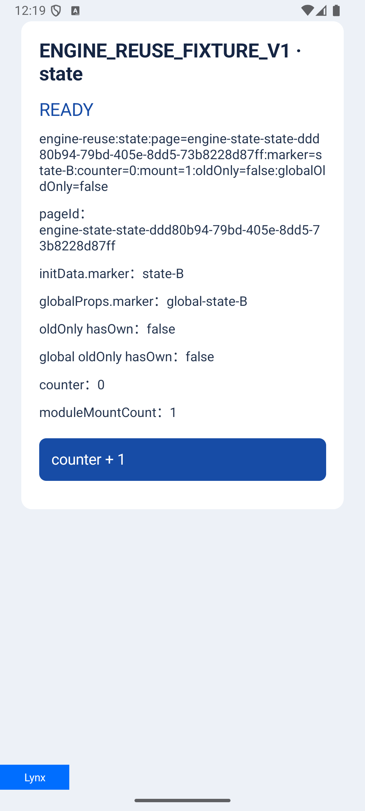
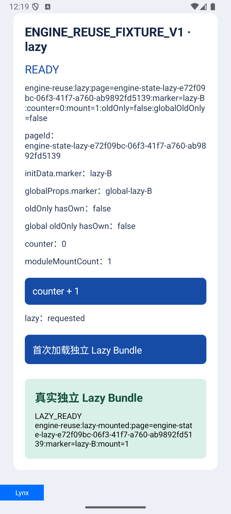

不能只把开关设为 true
先写测试、完成旧链路基线，再接入官方能力。Engine 对象和非零指针可以相同，这只能证明复用发生，不能证明新页面正确。官方能力本身可以用，本轮也真实命中了 Engine；当前失败只针对“销毁 A → 新建独立 B 页”的原型。源码中的 first-screen synced 门禁与旧 UI 残留一致，是强根因候选；没有直接采集该标记或做同步状态控制对照，尚未确证完整运行态根因。
公开 resetData 不重开这条生命周期；reloadTemplate 在同 VM 中重新挂载，有二次副作用风险。没有使用私有框架注入、延迟竞争或放宽可见节点断言。
setEnableCacheEngine(false)、setEnableSharedModule(false)。全面 Engine 复用目标仍未完成；“90 分”、整体 p95 提升及所有页面无泄漏均没有本轮证明。
实际使用什么 API，缓存在哪里
读取已安装 dynamic-workflows、ReactLynx、TypeScript、DevTool skills；缺失的 lynx-api-docs 没有假称加载。API 以固定 4.1 官方源码、本机 AAR 和已安装 ReactLynx 运行时为准。
val builder = LynxViewGroupBuilder()
.setContext(applicationContext)
.setUrl(logicalUrl)
.setEnableCacheEngine(false)
.setEnableSharedModule(false)
builder.setTemplateResourceFetcher(slotAdapter) // setter 返回 void
val group = builder.build()
viewBuilder.setLynxViewGroup(group)
// 首次：Provider IO 内检查实际 SHA，再 TemplateBundle.fromTemplate(bytes)
// 最终：全部 View 销毁、slot 释放时调用 group.release()官方 3.8 集成说明 · 固定 4.1 Builder · Group 所有权 · TemplateBundle API
Key 包含 app、Release、主包 SHA、epoch、source/selection、已验证资源快照和环境。Group 不持 Activity 或旧 Provider；资源绑定只在当前 page lease 内存活。Direct/custom 身份不足时保持原加载路径。
同一探针，原型失败，安全方案通过
| 验证层 | 真实结果 | 能证明什么 |
|---|---|---|
| 零改基线 | 并发 PASS；真实 READY 后 Engine 不复用产生 Red | 不是编译失败冒充基线失败 |
| Engine 原型 | 4项：2 PASS / 2 FAIL | UI 旧状态是阻断，原目标没有标为成功 |
| 最终设备回归 | 9 / 9 PASS · 17.828秒 | 模板实际复用、新 shell、SDK首屏、真实Native/UI、trim/取消/并发 |
| JVM | 145 total · 142 PASS / 3 SKIP | 新增15 Pool + 6身份用例通过；外部Server3项跳过 |
| Release主库 | assembleRelease PASS | 生产源码去调试块后可编译 |
| 截图专项 | 2 / 2 PASS · 10.689秒 | 截图在全部行为断言后采集，不混性能样本 |


内存观察需要看引用根
十次Small往返：整个Debug Sample的READY PSS为197,004–201,640 KiB，destroy后为188,996–198,032 KiB；第十次比第一次destroy后高3,512 KiB（约3.43 MiB）。这不等于缓存自身内存，也不能用十次样本判长期无泄漏。
SDK布局首屏首个样本36.572 ms，后九次中位数20.328 ms。没有同口径baseline配对；SDK布局完成也不是点击至屏幕呈现的p95，不能据此宣称整体提速比例。
十次原始PSS与SDK布局首屏
| 次序 | READY PSS / KiB | destroy后 / KiB | SDK布局首屏 / ms |
|---|---|---|---|
| 1 | 197,004 | 188,996 | 36.572 |
| 2 | 198,622 | 190,702 | 11.538 |
| 3 | 199,932 | 192,344 | 16.295 |
| 4 | 197,248 | 189,384 | 18.063 |
| 5 | 198,608 | 198,032 | 32.394 |
| 6 | 200,060 | 192,204 | 19.983 |
| 7 | 201,640 | 193,668 | 20.328 |
| 8 | 197,684 | 189,804 | 30.225 |
| 9 | 199,004 | 191,148 | 23.033 |
| 10 | 200,360 | 192,508 | 25.892 |
这组样本没有主动GC；来自首轮完整安全运行。原始摘要
两次HPROF的具体发现
首次强根：Instrumentation Thread → MessageQueue → ScrollabilityCache callback → old ScrollView → old LynxContext → destroyed Activity 等待3秒后：严格分析仅排除弱引用，未找到该Activity的强GC根。 对象仍作为unreachable保留在dump中；WeakReference诊断仍为false。
第一条链没有经过模板缓存；第二次强队列保留已消失。本次范围内没有观察到缓存持有旧Activity的强根，但没有声明所有Native资源无泄漏。原始heap仅留本机临时目录，不进入项目和知识库。
代码与剩余目标
主库统一接入Factory、Page与Native Tab；资源请求保持同步/异步合同；旧client、Native hosts与lease在同一销毁链清理。Tab的GlobalProps和MessageHub共享pageInfo，emitToNative按真实View寻址。
Lynx和Android专项复审覆盖最终真实diff，指定范围无剩余阻断。当前分支与main基线：codex/bundle-loading-opt / b3837d491069dd5409d78dad75276201c54edaa3；未提交、未push、未merge，iOS/Harmony没有本轮修改。
- 已完成：有界解析缓存及上述Android行为、构建和内存诊断。
- 未完成：通用同Engine的新页复用；需要可靠ReactLynx onReuse/hydration合同，继续通过原型的新UI和一次副作用断言。
- 未验证：真实业务包/低端真机p95、Map/Video长期footprint、十个活页并存、三端同等体感。
- 大包白帧交接仍是前轮设计，本轮没有实施遮白。
模拟器隔离App已安装；手动首页保留小包、大包和十脚本Async入口。报告证据不是生产上线证明。